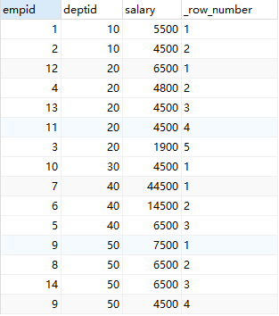
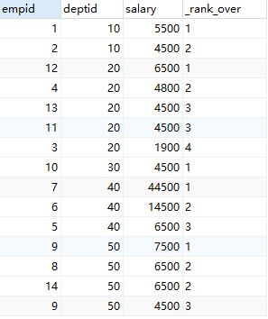
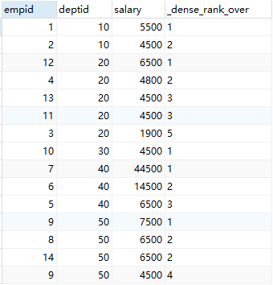

项目及开源学习中经常有些sql需要写，其中一些sql逻辑比较简单，但是另外的一个还是要思考一段时间的，本文就是把这部分需要思考一段时间的sql记录下来，可以与大家分享的同时，也可以避免长期未使用而遗忘。
单表自关联
分组排序累加
1 | create table tmp1( |
求表各个os_type(系统)按照hours(时间)排序，并且累加count_num的值。单表通过os_type自关联，用时间进行过滤，然后再分组。
1 | select t1.os_type |
使用临时变量部分
很多从Oracle转来使用MySQL的同学都会抱怨，很多Oracle内置的函数Mysql都不支持，这部分主要讨论使用MySQL临时变量完成部分Oracle函数的功能。主要实现的函数有三种排序并标序号，[row_number ()partition over](#partition row_number), [rank() partition over](#partition rank), [dense_rank() partition over](#partition dense_rank)几个功能。
建表
首先对将要测试的数据进行建表，运行下面建表及初始化数据的sql脚本
1 | ------------------------------------------------------- |
查看表employee中的数据，select * from employee;可以看到如图：
三种排序标序号
这部分主要针对MySQL中没有分组(partition)的排序，即对选择的所有记录进行排序，其中分为简单的标号排序，不跳过排序的并列值，跳过排序的并列值。sql实现难度也从简单到困难，下面对这三种标号的排序进行说明。
单纯标号排序
单纯对工资排序，即使值重复序号也不一样，不会因为值重复就跳过重复的数量。
他的实现逻辑是编写一个按照要排序的字段(这里是salary字段)的升序后降序子查询t1，这样就能得到按照工资降序的临时子查询表t1。然后和临时变量@rank进行关联，每次在最外层查询select字段的时候，都将临时变量@rank的值加一。
1 | ------------------------------------------------------- |
运行上面的sql会看到下面的结果：
排序不跳过并列序号
对工资进行排序，工资相同排序相同，有并列排名时不会跳过。在单纯标号排序的基础上比较每两个相邻的salary的值，当连续的salary相同时排名相同。
先按照要排序的字段(salary)进行升序或降序，生成一个临时表t1，然后和临时变量@rank(记录当前排名)，@pre_salary(记录上一条记录salary的值)进行关联。在最外层的查询中，表达式@pre_salary != (@pre_salary := salary)是判断当前的salary和@pre_salary是否相等，当两个值相等，是表达式为0，反之为1。所以外层查询选择的第四个字段相等于@rank = @rank + (0 or 1)，这样就能实现当salary相同时排名相同。
1 | ------------------------------------------------------- |
运行上面的sql会看到下面的结果：
排序跳过并列序号
对工资进行排序，工资相同排序相同，有并列排名时会跳过。排序跳过并列序号是排序不跳过并列序号的升级版，其难点是要比较两个连续salary是否相等的同时，记录连续salary出现的次数@skip_num。当两个连续salary不相等的时候，@rank的值除了要加一外，还要加上@skip_num的值。
先生成按照salary降序的临时表t1，临时变量@rank用于计算当前排名，@skip_num用于记录连续相同salary的次数，@pre_salary_1和@pre_salary_2均用于判断当前记录salary和前一条记录的salary是否相等，前者为@rank服务，后者为@skip_num服务。
1 | ------------------------------------------------------- |
运行上面的sql会看到下面的结果：
实现oracle相关分析函数功能
这部分主要实现了Oracle相关的分析函数，包括[row_number](#partition row_number), [rank](#partition rank), [dense_rank](#partition dense_rank)三个分析函数。
partition row_number
实现Oracle的row_number() partition over方法，要达到的目的是先对源数据按其中一个字段(deptid)进行分组，再在分组中按照另一个字段(salary)升序或降序排序，并进行标号。
其实现逻辑是，生成一张按照deptid和salary排序的临时表，然后和临时变量@pre_dept和@rank进行关联，其中@pre_dept表示前一条记录部门的值，@rank表示排名。主要的实现在外层查询的if (@pre_dept = (@pre_dept := deptid), @rank := @rank + 1, @rank := 1)中，如果当前deptid和前一条记录的deptid相同时，说明是在同一个deptid的分组中，排名@rank就增加1；如果当前的deptid和前一条记录的deptid不相同，说明deptid分组已经变化了，排名@rank要重新从1开始计算，所以@rank:=1。
1 | ------------------------------------------------------- |
运行上面的sql会看到下面的结果：

partition rank
实现Oracle的rank() partition over方法，是[row_number](#partition row_number)的升级版。要达到的目的是先对源数据按其中一个字段(deptid)进行分组，再在分组中按照另一个字段(salary)升序或降序排序，并进行排序，此时的排序允许有并列序号，但是不会跳过并列序号的次数。
最外层查询只是为了选择@pre_salary变量的值，主要逻辑集中在次外层查询。首先在employee表中按照部门和工资排序，得到子查询t1，再和@pre_dept(前一条记录的部门), @rank(排名), @pre_salary(前一条记录的工资)关联。在次外层查询中，满足当前部门(deptid)和前一条记录的部门(@pre_salary)相等，并且当前记录工资(salary)和前一条记录工资(@pre_salary)相等时，说明是同一个部门并且工资相同，所以排序(@rank)值不变；仅是部门相等但是工资不等，则说明同一部门但是工资不同，所以@rank + 1；回到sql次外层查询中最外层的if条件，当前部门和前一条记录的部门不相等时，则部门变了，排序要重新开始，所以@rank := 1。注意次外层查询中，单独@pre_salary := salary进行赋值，防止当外层if条件不满足时，在内层sql写@pre_salary = (@pre_salary := salary)不能更新@pre_salary的值。
1 | ------------------------------------------------------- |
运行上面的sql会看到下面的结果：

partition dense_rank
实现Oracle的dense_rank() partition over方法，是[rank](#partition rank)方法的升级版。在rank方法的基础上，如果有重复的序号，要跳过重复的次数。
先按照部门和工资排序，生成子查询t1。和临时变量@pre_dept(上一条记录部门的值)，@rank(当前数据排名)，@pre_salary(上一条记录工资的值)，@skip_num(该部门分组该排名需要跳过的值)进行关联。其中排名实现在[rank](#partition rank)方法上加上@skip_num值，所以剩下的问题是确定@skip_num的值。若当前工资的值和上一条记录中工资的值相等，@skip_num的值就加一，反之@skip_num均赋值为0
1 | ------------------------------------------------------- |
运行上面的sql会看到下面的结果：
